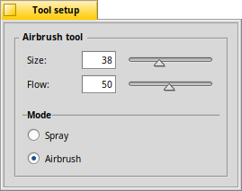

The Airbrush tool - A
|  |
This tool emulates a real-world airbrush. The determines if the tool acts like a , sprinkling single pixels, or a classic , where a fine mist of pixels bleed together. The quick key to choose the airbrush tool is A. |
Back: The Hairy Brush tool Next: The Blur tool